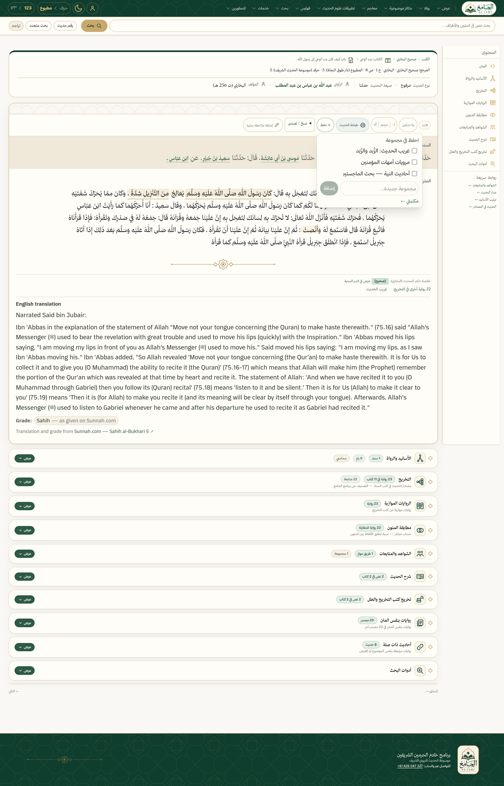
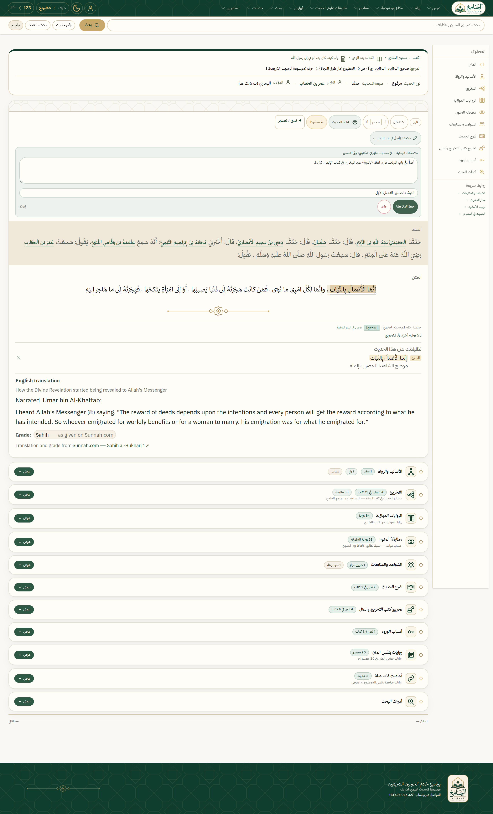
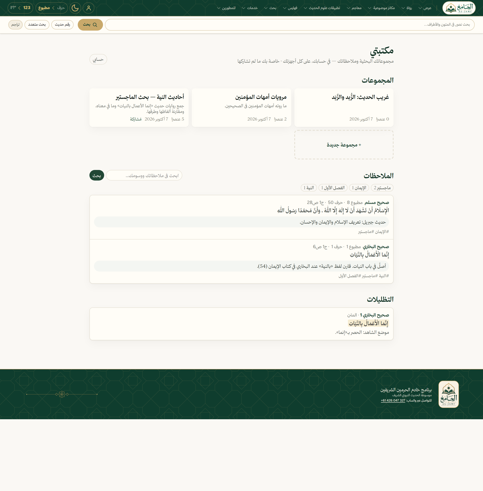
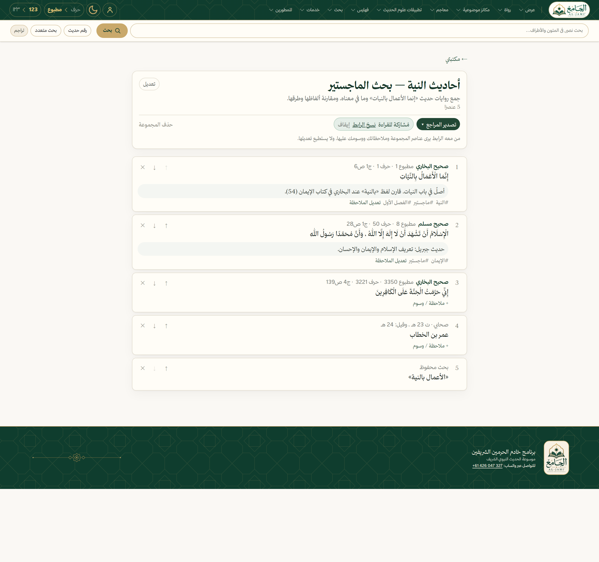
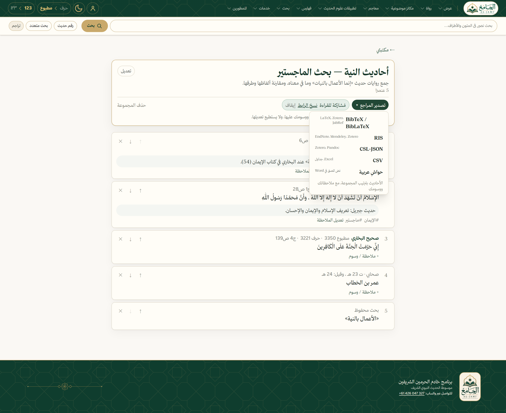
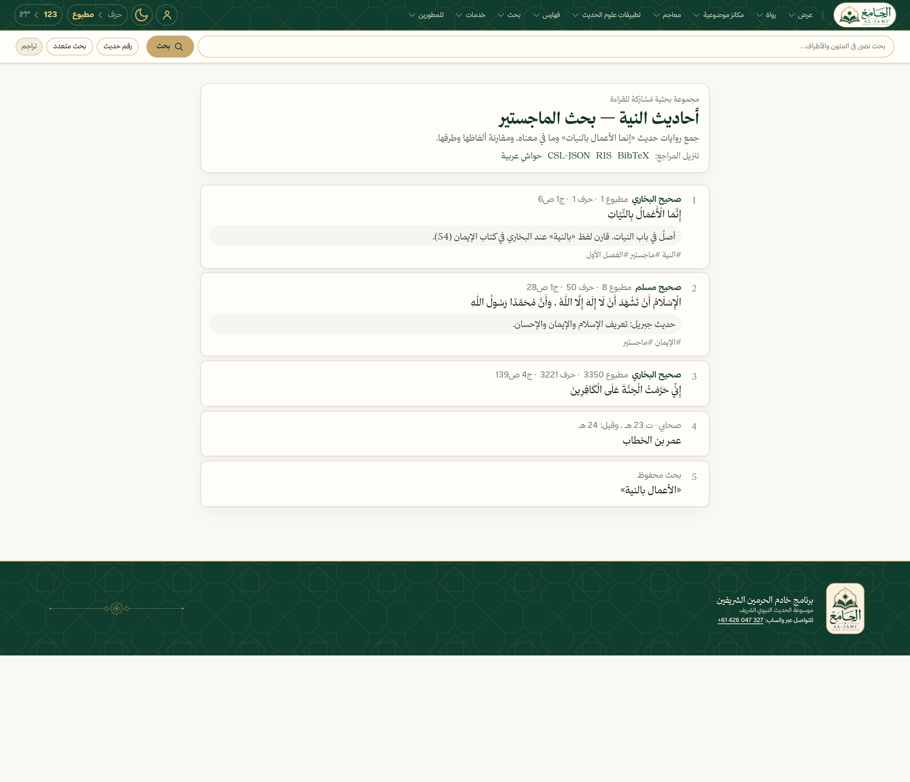

بحثُك في الحديث… في مكانٍ واحد
مكتبتي
جمعٌ · تدوين · تظليل · توثيق · مشاركة






حاشيةٌ جاهزة لرسالتك
أخرجه البخاري في صحيح البخاري (دار طوق النجاة، بيروت، ط. الأولى، 1422هـ)، كتاب أحاديث الأنبياء، 4/139، رقم (3350).
Word
Zotero
EndNote
LaTeX

أنت
احفظ حديث «إنما الأعمال بالنيات» من صحيح البخاري في مجموعة «أحاديث النية»، واكتب: موضع الشاهد الحصر بـ«إنما».
المساعد
save_to_my_collection ✓حُفظ في «أحاديث النية — بحث الماجستير» مع ملاحظتك. وهذه حاشيته:
أخرجه البخاري في صحيح البخاري، 1/6، رقم (1).
أخرجه البخاري في صحيح البخاري، 1/6، رقم (1).
مكتبتي
مجانًا بحسابٍ على
hadith.dev